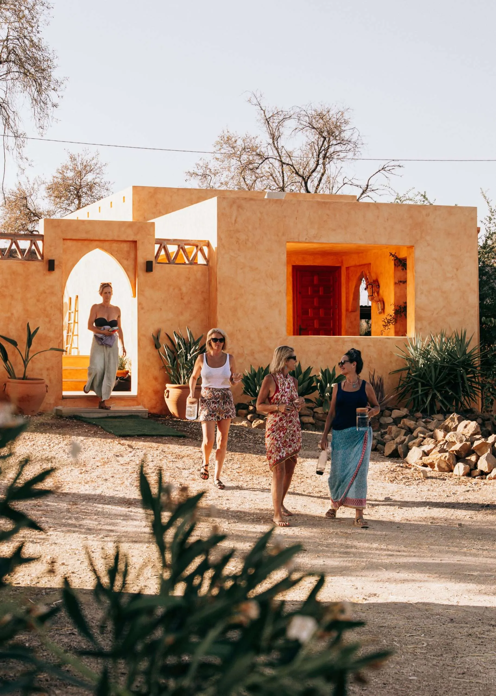
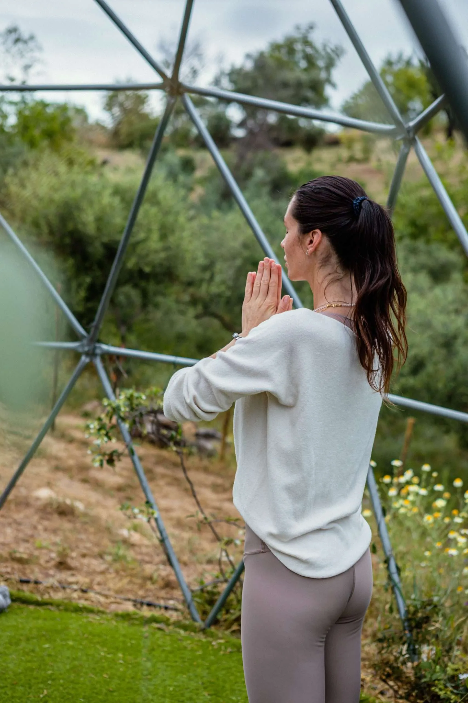
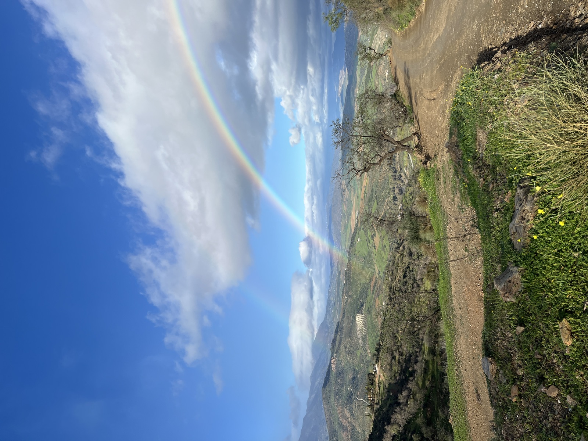
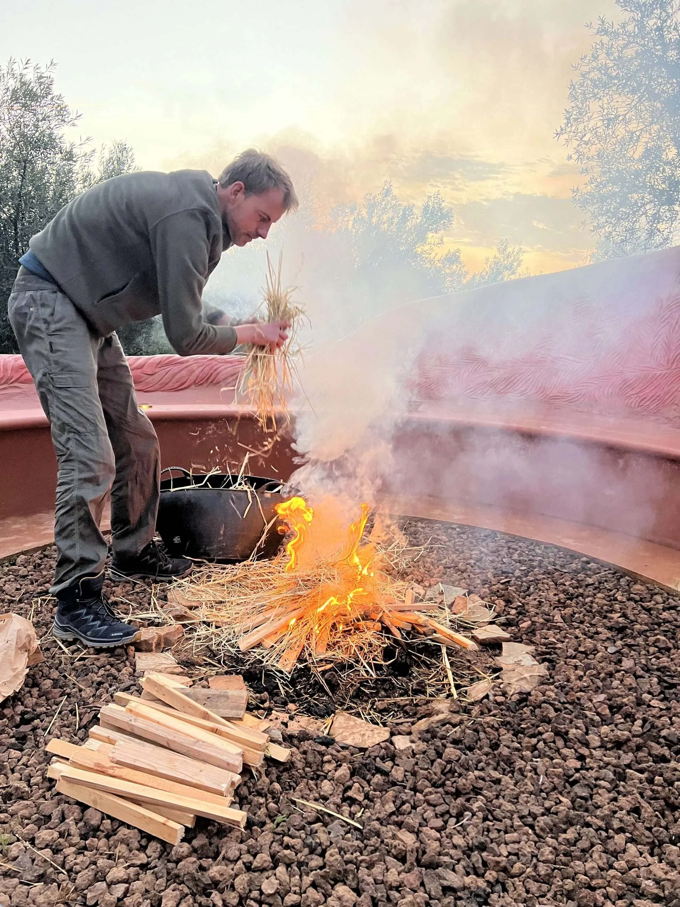
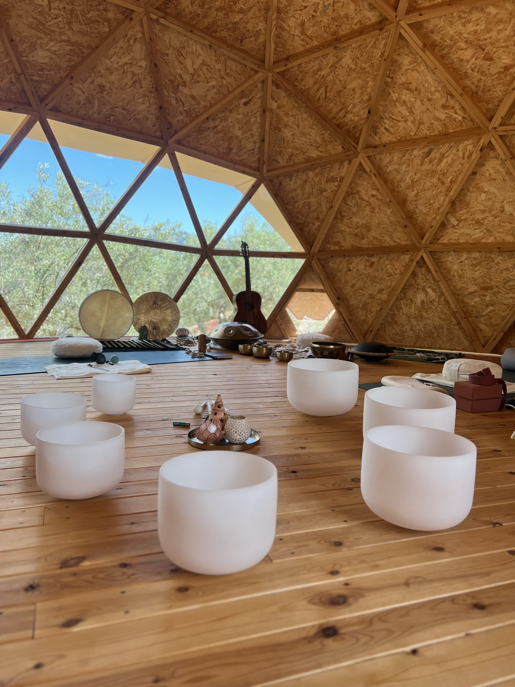

Ground
Grounding yoga, plant discovery, nature connection, and a soulful dinner with music beneath the stars.

The Retreat
Escape to the heart of Andalucía for a retreat inspired by the elements of Earth, Fire, Water, and Air — a space to slow down, reconnect, and breathe again.


inspired by the elements
Surrounded by waterfalls, mountains, nature, and peaceful donkeys, this is a space to slow down, reconnect, and breathe again.
Through yoga, breathwork, guided movement, cacao ceremony, voice activation and sound journeys, each day brings you closer to a different element — Earth, Fire, Water and Air.
Relax in beautiful surroundings, enjoy the pool, jacuzzi and nourishing meals prepared by our chef, rest deeply in comfortable glamping tents beneath the stars.
Guided by Rosa and Pouyan, two warm and passionate hosts, this retreat is an invitation to reconnect with nature and come home to yourself.


Over 3 nights and 4 days, the retreat moves softly through the elements of Earth, Fire, Water and Air — with yoga, breathwork, movement, sound healing, cacao ceremony, music, hikes in nature, and shared meals around a long table. Each day brings a different quality — grounding, flow, clarity, expression and quiet renewal.
You’ll be guided by Rosa and Pouyan, two warm and experienced hosts who lead with care and presence. The sessions are gentle, grounded and open to all levels — designed to help you slow down, reconnect with yourself, and come home a little softer than you arrived.


Grounding yoga to reconnect with the body, a plant discovery walk, nature connection, and a slow shared dinner with music beneath the stars.

Dynamic yoga, voice activation, cacao ceremony and a guided movement meditation to awaken your energy. Paella cooking class with the chef.

Starting the day with meditation, followed by an afternoon hike to the local waterfalls and a breathing session by the water. Ending the day with a sound session.

Sunrise yoga, gratitude practices, and a heartfelt closing circle to reflect, reconnect, and integrate the journey.
ready to journey through the elements?
Reserve your placeSebastián Serpell
Musician · Composer · Sound Healer
In my Sound Meditations I invite you to close your eyes, relax and travel with the vibrations and resonances of instruments from around the world — letting them carry you through different emotions and sensations, slowly into deep meditation.
Sebastián is a multi-instrumentalist and composer with deep experience scoring live music for yoga, therapies, theatre, dance and ceremony.
A small team of facilitators, creators and guides who bring nature, movement, music, nourishment and human connection together with care and warmth. All bodies, all ages and all levels of experience are welcome.

A music producer and facilitator creating immersive experiences through sound, movement, voice and breathwork. His sessions invite deep connection, emotional release and self-expression.
Through rhythm, guided movement and conversation, he builds spaces that feel both grounding and expansive — designed to awaken creativity and reconnect people with themselves.

With a foundation in yoga, scent alchemy and a deep connection to nature, Rosa creates grounding, heart-opening experiences inspired by the wisdom of the elements.
Her warm, nurturing approach makes a safe space for guests to slow down, reconnect with themselves and embrace the present moment with softness and intention.

A professional chef who believes food is an essential part of connection and wellbeing. Using fresh local ingredients, he creates vibrant, plant-rich Mediterranean meals.
From dinners beneath the stars to a hands-on paella experience, his food brings warmth, joy and meaningful moments shared together around the table.

A hospitality professional and event organiser who brings warmth and care to every part of the experience — your main point of contact throughout the retreat.
She also captures the beautiful moments and memories of the retreat, helping everyone feel relaxed, supported and truly at home from beginning to end.